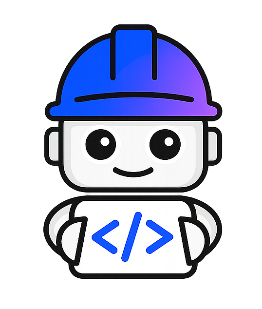

오늘 두 시간 동안 여러분은 보는 게 아니라 직접 만듭니다 — 랩 3개, 각 20분. 실제 코드베이스에 예약 변경 기능을 붙이고, MCP 도구를 짜고, 아무도 못 건드리던 레거시 코드에 테스트를 씌웁니다. 60분 뒤 여러분 손에는 이미 작동하는 .bob/가 있고, 남은 시간은 그걸 내 반복 업무에 한 번 더 적용하는 데 씁니다.

앞 60분은 손으로 하는 랩 3개입니다 — 보는 게 아니라 직접 타이핑합니다. 세 랩은 같은 레포 하나에 쌓이고, 끝나면 여러분의 .bob/에는 파일 네 개가 들어 있습니다. 뒤 50분은 그 자산을 내 반복 업무에 한 번 더 적용하는 시간입니다.
.bob/에 파일이 하나씩 쌓입니다. 랩마다 마지막 1분은 “우리 팀에서는?” 60초 메모.AGENTS.md, Skill, 커스텀 모드, MCP 서버. 오늘 나오는 모든 결과물은 파일이어야 하고, 그 파일은 월요일에 여러분 레포에 커밋됩니다.문서나 리포트를 만드는 것도 오늘의 정당한 과제입니다. 밸류가 갈리는 지점은 딱 하나 — 파일로 남느냐, 채팅으로 흩어지느냐입니다.
.bob/skills/security-audit/SKILL.md를 커밋한다 → 팀 전원이 /security-audit로 같은 절차, 같은 형식의 리포트 파일을 뽑는다 → CI에도 걸 수 있다. 사람이 아니라 레포가 이 능력을 갖게 됩니다.
ide/tutorials/audit-code: audit Skill을 만들고 → findings.md를 뽑고 → SARIF와 OSCAL 리포트를 생성합니다.| 시각 | 분 | 단계 | 내용과 진행 요령 | 산출물 |
|---|---|---|---|---|
| 14:30 | 5 | 오프닝 | 오늘의 약속(“채팅이 아니라 자산”)과 심사 기준 한 문장, 그리고 규칙 하나: “16:20에 손을 뗍니다. 완성 여부와 무관하게.” 회사 소개나 로드맵은 없습니다 — 바로 손을 씁니다. | — |
| 14:35 | 20 | LAB 1Build | 직접 합니다. /init로 AGENTS.md를 만들고 팀 규칙 3개를 박아 넣은 뒤, Ask → Plan → Agent로 기능 하나를 붙입니다. 승부는 코드가 나오는 장면이 아니라 아무도 시키지 않은 팀 규칙이 지켜진 장면에서 납니다. |
AGENTS.md기능 1개 + 테스트 |
| 14:55 | 20 | LAB 2Extend | 오늘 가장 잘 깨지는 20분. 그래서 2단계로 쪼갭니다 — ① 이미 도는 MCP 서버를 3분 만에 붙여 배선을 먼저 검증하고 ② 그다음에 Bob에게 도구를 짜게 합니다. 마지막 5분은 커스텀 모드로 건드리면 안 되는 파일을 잠급니다. | .bob/mcp.jsoncustom_modes.yaml |
| 15:15 | 20 | LAB 3Modernize | 테스트가 0개인 레거시 Java 클래스 딱 1개. Skill을 만들어 → 분석 리포트를 뽑고 → 특성화 테스트를 생성해 초록불을 봅니다. 파는 것은 속도가 아니라 손대도 안전하다는 확신입니다. | skills/legacy-safety-net/리포트 + 통과하는 테스트 |
| 15:35 | 5 | 브레이크 | 60분 연속 타이핑 뒤의 5분. 곧바로 발상으로 넘어가지 않습니다. 뒤처졌다면 여기서 따라잡으세요. | — |
| 15:40 | 10 | 스코프 게이트Ideation | 긴 워크숍이 아닙니다. 랩 3개를 마친 여러분은 이미 60초 메모 3장을 쥐고 있습니다. 카드 덱에서 내 반복 업무를 고르고, Asset Card 한 장을 채우고, 마지막 3분에 범위를 냉정하게 깎습니다 — Bob이 30분에 만들 파일 하나로. | Asset Card |
| 15:50 | 30 | 빌드 스프린트 | 사수해야 하는 30분. 자기 회사 레포를 열어도 좋습니다 — 그게 최고입니다. 16:05에 안 되면 폴백(아래), 16:20에 하드 스톱. | 내 .bob/ 자산 |
| 16:20 | 10 | 플레이백 | 3팀 × 3분 발표 + 나머지는 .bob/ 트리 스크린샷 한 줄을 공유 보드에 붙입니다. 전원이 뭔가를 남깁니다. |
공유 보드 |
5 · 20 · 20 · 20 · 5 · 10 · 30 · 10 = 정확히 120분입니다. 완충은 5분짜리 브레이크 하나뿐이라, 각 랩은 20분 안에 끝내는 것을 목표로 합니다. 못 끝내도 괜찮습니다 — 랩마다 폴백이 준비돼 있습니다.
세 랩은 서로 다른 레포로 흩어지지 않습니다. 스타터 레포 하나를 열고 끝까지 그 안에서 진행합니다. 그래야 15:35에 참가자의 .bob/ 트리에 네 개의 파일이 동시에 존재하고, 그대로 git add .bob/가 됩니다. 랩이 끝날 때마다 마지막 1분은 손을 멈추고 메모합니다 — 이 세 줄이 15:40 아이데이션의 원재료입니다.
POST /bookings/{id}/reschedule를 추가합니다.AGENTS.md에 팀 규칙을 박고 → Ask로 훑고 → Plan으로 계획을 검토하고 → Agent로 구현합니다.create_ticket을 직접 만들고, 커스텀 모드로 편집 범위를 잠급니다.tickets.json이 실제로 한 건 늘었다.”/init부터. 모든 참가자가 같은 화면을 봅니다.| 분 | 모드 | 무엇을 시키나 |
|---|---|---|
| 0–3 | — | 이 레포엔 이미 AGENTS.md가 있습니다(9KB). 열어 보세요. 그런데 전부 “설명”입니다 — “이 레포는 이렇게 생겼다”. “너는 이렇게 해야 한다”가 없습니다. 비어 있는 ## Team conventions 섹션에 CONVENTIONS.md의 규칙 4개를 붙여넣으세요. |
| 3–6 | Ask | “예약의 생성·취소가 어디서 일어나는지, 항공편 변경(reschedule) 엔드포인트를 추가하려면 어떤 파일을 건드려야 하는지 알려줘.” → Ask 모드는 파일을 못 고칩니다. 낯선 레포를 겁 없이 뒤질 수 있는 이유를 몸으로 확인합니다. |
| 6–11 | Plan | “POST /bookings/{id}/reschedule을 계획하고 plan/reschedule.md에 저장해.” (없는 예약 404 · 취소된 예약 409 · 좌석 없음 409 · 좌석 재고 이동 + 요금 차액) → 계획 파일을 실제로 열어서 읽습니다. |
| 11–17 | Agent | “@plan/reschedule.md 구현해줘.” → 이어서 pytest tests/test_rest.py -k Reschedule |
| 17–19 | 증명 | diff를 엽니다. ① 에러가 404 / 409로 나옵니다 ② @mcp.tool()이 같이 생겼습니다 ③ 테스트 클래스가 생겼습니다. 이 레포의 기존 엔드포인트는 실패해도 전부 HTTP 200을 반환합니다 — 기존 테스트 38군데가 status_code == 200을 단언합니다. Bob이 주변 코드를 흉내 냈다면 200이 나왔을 것입니다. 404가 나왔다면, Bob은 코드가 아니라 당신의 규칙을 따른 것입니다. 이 20분의 전부가 이 한 장면입니다. |
| 19–20 | 60초 메모 | 치트시트 뒷면에 한 줄: “월요일에 우리 팀 AGENTS.md에 넣을 규칙은?” |
AGENTS.md와 plan/reschedule.md는 남습니다.| 분 | 단계 | 무엇을 시키나 |
|---|---|---|
| 0–3 | ① 붙인다 | 코드 0줄 · 빌드 0 · 네트워크 0. mcp/galaxium-ops/는 dist/까지 빌드되어 레포에 들어 있고, list_tickets 도구가 이미 동작합니다. cp .bob/mcp.json.example .bob/mcp.json → MCP 재시작 → Ask 모드: “list_tickets로 열려 있는 티켓 보여줘.” → 3분 만에 배선 검증 완료. 이제 뭐가 실패해도 자산 하나는 확보된 상태입니다. |
| 3–13 | ② 짜게 한다 | src/index.ts에 [LAB 2 — TODO] 블록이 있습니다. Agent 모드: “@mcp/galaxium-ops/src/index.ts에 create_ticket 도구를 추가해. 기존 readStore()/writeStore()를 재사용해.” → npm run build → 재시작 → 호출 → mock-internal/tickets.json이 실제로 한 건 늘어납니다. 회사에선 이 자리에 사내 Jira API가 들어갑니다. |
| 13–18 | ③ 잠근다 | cp .bob/custom_modes.yaml.example .bob/custom_modes.yaml → 📝 Docs Writer 모드로 전환 → 일부러 .py 파일을 고치라고 시켜 보세요. 거부당합니다 (fileRegex: '.*\.(md|mdx)$'). 이것이 “에이전트가 절대 만지면 안 되는 영역이 있는 레포”에 Bob을 들이는 방법입니다. |
| 18–20 | 60초 메모 | 한 줄: “내가 매주 복붙해서 꺼내오는 사내 시스템은? 그게 내 MCP 서버다.” |
cd mcp/galaxium-ops && npm run smoke — 초록이면 Bob 연결 문제, 빨강이면 서버 문제. 3초에 갈립니다. 13분에 도구가 안 붙었으면 즉시 ③으로 넘어가세요 — ③은 5분이면 끝나고 확실히 됩니다.| 분 | 단계 | 무엇을 시키나 |
|---|---|---|
| 0–3 | 시연 (보기만) | 앞에서 시연으로 봅니다(직접 하지 않습니다). 프로젝터에 /start-java-mod와 “무엇을 레거시로 만들었나” 표가 뜹니다 (Java 17→1.8, Boot 3.4→2.7, java.time→Calendar, 생성자 주입→필드 @Autowired, jar→war). “이것이 라이선스 패키지가 자동화하는 것입니다. 지금부터 여러분은 그 핵심을 plain Bob으로 하고, 그걸 해주는 Skill을 들고 나갑니다.” |
| 3–8 | 출발점 + Skill | 먼저 테스트가 0개임을 눈으로 확인합니다 — 테스트 명령을 치면 No tests were executed! BUILD FAILURE. 그게 출발점입니다. 그다음 .bob/skills/legacy-safety-net/SKILL.md를 읽습니다 (Discover → Characterize → Test → Report). ※ Skill은 Advanced 모드에서만 동작합니다. |
| 8–17 | Agent | 클래스 딱 1개: QuoteService.java. Bob이 → docs/legacy-analysis.md 리포트를 쓰고 → JUnit 특성화 테스트를 생성하고 → ./mvnw -o test -Dtest=QuoteServiceTest → 초록불. 프롬프트에 반드시 못박을 것: “Mockito 단위 테스트만. @SpringBootTest 금지. pom.xml 건드리지 마.” — 새 의존성은 오프라인에서 즉사입니다. |
| 17–19 | 증명 | Bob이 찾은 “의심스러운 동작” 표를 엽니다. 그중 하나는 운영에서 실제로 터지는 버그입니다 — 동시 요청이 들어오면 데이터가 깨집니다. IBM이 자기 문서에서 “진짜 버그”라고 인정한 것입니다. 그런데 고쳐지지 않았습니다. 테스트로 고정되었을 뿐입니다. 이제 리팩터링을 시키고 테스트가 여전히 초록인 것을 보세요. 이 장면에 시간을 더 쓰세요. |
| 19–20 | 60초 메모 | 한 줄: “우리 팀에서 이 파일에 해당하는 파일은 무엇인가?” |
IBM의 IBM/galaxium-travels (Apache-2.0)를 포크했습니다 — Python/FastAPI 백엔드 + React 프론트 + 의도적으로 10년 묵은 Java 서비스(Boot 2.7 · javax.* · Calendar · 필드 @Autowired). IBM 공식 튜토리얼이 전부 이 레포 위에 있어 막혔을 때 기댈 문서가 존재합니다.
./mvnw -o는 오프라인이 아닙니다. -o는 Maven에게 전달될 뿐, 래퍼 스크립트는 그 전에 Maven 배포판 9MB를 받으러 갑니다.scripts/preflight.sh를 자기 사내망에서 한 번 돌려두세요. 그게 ~/.m2와 래퍼 dist를 채웁니다. 콜드 캐시면 첫 빌드에 5~10분 정지합니다 — 당일 랩 하나가 통째로 날아갑니다.mvn이 아니라 ./mvnw여야 합니다 — enforcer가 Maven 3.8+를 요구합니다. 백엔드 pytest도 네트워크 없이 돕니다.랩을 세 번 해 본 여러분에게 30분짜리 브레인스토밍은 낭비입니다. 이미 60초 메모 세 장을 손에 쥐고 있으니까요. 필요한 건 발상이 아니라 깎아내기입니다. 10분 안에 카드 한 장을 채우고 곧장 만들러 갑니다.
AGENTS.md 규칙 ☐ Skill ☐ 커스텀 모드 ☐ MCP 서버 — 오늘 넷 다 만들어 봤습니다.
스타터 레포에서 해도 되고, 자기 회사 레포를 열어도 됩니다 — 그게 최고입니다. 월요일에 그대로 커밋되니까요. 다만 30분은 짧고, 막힐 수 있습니다. 그때 무엇을 버릴지 미리 정해 둡니다.
.bob/ 트리를 찍어 보드에 붙입니다
발표는 못 해도 기록은 남고, 서로 훔쳐 갑니다. 이 보드가 행사 후에 사내로 퍼지는 실물입니다.
랩은 여러분 노트북이 당일 오프라인으로 돌아야 성립합니다. 아래는 당일 아침이 아니라 미리 끝내둘 것들입니다 — 하나라도 빠지면 랩 하나가 통째로 날아갑니다.
scripts/preflight.sh 자가 점검 — 12개 항목
Maven 워밍(래퍼 dist 포함) · 오프라인 빌드 · MCP 스모크 · pytest · bob.ibm.com 도달. 이걸 돌려야 당일 오프라인이 됩니다.
node_modules · Python 휠 포함 — 네트워크 없이 랩 3개가 돕니다. 당일 이걸 처음 받지 마세요.
lab/에 들어 있습니다.
두 시간짜리 행사의 성패는 “재미있었다”가 아니라 커밋 가능한 파일이 남았는가로 갈립니다. 랩 3개가 끝나는 15:35, 여러분의 .bob/에는 이미 AGENTS.md · mcp.json · custom_modes.yaml · skills/가 전부 들어 있습니다. 스프린트 30분은 거기에 내 업무로 만든 네 번째 자산을 얹는 시간입니다. 데모는 잊히지만 커밋된 파일은 남고, 그 파일이 팀 안에서 Bob을 계속 팔아 줍니다.